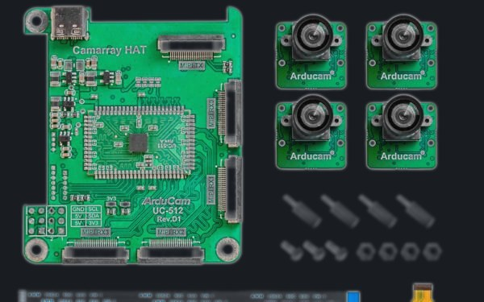

Camera array hardware · Arducam
Lab research • 2026–present
GPS-Denied Autonomous Drone Navigation
Vision-based navigation for drones flying where GPS is unavailable. I work on the multi-camera synchronization and calibration layer (B-CamSync): bringing up a synchronized camera array on a Raspberry Pi 5, calibrating the cameras, and contributing calibration and test code to the group's repository.
Computer visionCamera calibrationSensor fusionEmbedded systems